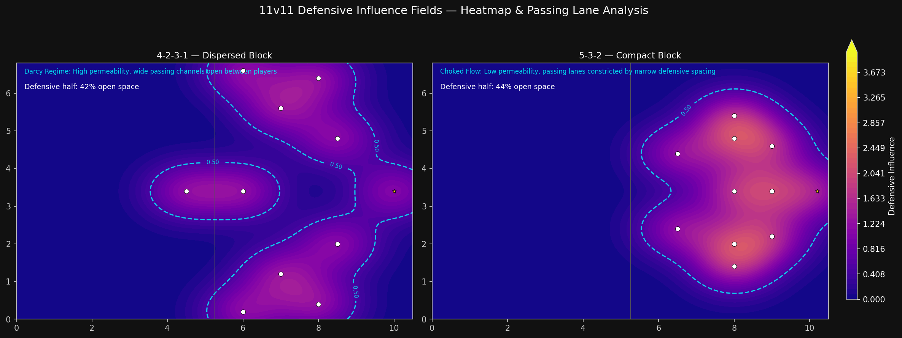
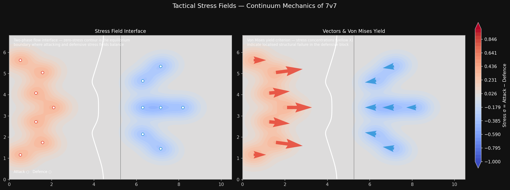

Tactical Heatmaps & Stress Fields
Overview
Team formation dictates which areas of the pitch a team can control. Rather than solving the full Navier-Stokes equations for every player, we model each player’s territorial influence with a 2D Gaussian kernel. This allows us to compute permeability surfaces, defensive stress distributions, and the collapse of structure under pressure — all at negligible computational cost relative to CFD.
The framework answers three tactical questions: - Where can a team apply pressure? - How permeable is a formation to penetrating passes? - How does defensive structure degrade when a block is bypassed?
Formation Heatmaps
Two canonical formations: 4-2-3-1 (spread) and 5-3-2 (compact).
| Aspect | 4-2-3-1 | 5-3-2 |
|---|---|---|
| Shape | Dispersed across width | Narrow, central block |
| Attacking width | Full pitch | Wing-back channels |
| Defensive solidity | Moderate | High (central density) |
| Counter vulnerability | Transitions | Wing exposure |
Each player is modelled as a Gaussian influence kernel \(G(x, y) = \exp\left(-\frac{(x - x_p)^2}{2\sigma_x^2} - \frac{(y - y_p)^2}{2\sigma_y^2}\right)\) with \(\sigma_x = 0.80\), \(\sigma_y = 0.55\) on a \(10.5 \times 6.8\) pitch. The composite influence field is the sum over all players on the same team.

Reading the Heatmaps
- 4-2-3-1 attacking (top-left): Influence is spread across the full width — the attacking midfield line occupies central zones while full-backs provide width.
- 5-3-2 attacking (top-right): Compact central block leaves large unoccupied zones in the wide areas.
- 4-2-3-1 defending (middle-left): The first and second banks of four create a distributed defensive screen.
- 5-3-2 defending (middle-right): Dense central coverage — the back three + two holding midfielders create a formidable central axis. Wide zones are comparatively exposed.
Permeability Metrics
The influence field \(I(x, y)\) is converted into a permeability surface \(P = 1 - \frac{I - I_{\min}}{I_{\max} - I_{\min}}\), where \(P = 1\) means fully permeable (no influence) and \(P = 0\) means fully controlled.
The 5‑3‑2 compact formation reduces central zone permeability from 46% to 7% — a 6.6‑fold reduction in available passing space. This quantifies why low‑block defences are so difficult to break down through the middle: the central corridor is effectively sealed.
Tactical insight: A 4‑2‑3‑1 relies on quick lateral circulation to find gaps. Against a 5‑3‑2, the attacking team must either pull defenders out of shape (through rotations or dribbling at the back line) or switch play rapidly to exploit the wide channels before the compact block can shift across.
Defensive Collapse Animation
When the compact block is bypassed — for example, by a dribble that breaks the first line of pressure — the formation must collapse toward the goal. We model this as a linear interpolation from the original 5‑3‑2 to a compressed version with narrower spacing.
What to Observe
- Increasing density: As the block collapses, player spacing narrows and the overlapping influence zones intensify (brighter yellow/white regions).
- Reduced gaps: The influence hot-spots merge into a single continuous defensive band — passing lanes through the block disappear.
- Temporal dynamics: The animation reveals how defensive shape degrades under pressure, transitioning from a structured block to a congested goal-mouth scramble.
Stress Fields on the Continuum
Beyond influence magnitude, we compute the stress tensor of the influence field \(I(x, y)\):
\[ \mathbf{S} = \begin{bmatrix} \frac{\partial^2 I}{\partial x^2} & \frac{\partial^2 I}{\partial x \partial y} \\[4pt] \frac{\partial^2 I}{\partial x \partial y} & \frac{\partial^2 I}{\partial y^2} \end{bmatrix} \]
The von Mises equivalent stress \(\sigma_{\text{VM}} = \sqrt{S_{xx}^2 - S_{xx}S_{yy} + S_{yy}^2 + 3S_{xy}^2}\) identifies zones where the influence field undergoes the most rapid spatial change — these are the tension lines and yield points of the defensive structure.

Interface Stress (Left Panel)
The horizontal derivative \(\frac{\partial I}{\partial x}\) measures the rate of change of defensive influence along the pitch. Warm colours (red) indicate zones where influence is increasing sharply — the front-line of the defensive block. Cool colours (blue) show zones where influence drops off — typically behind the defensive line, where space opens up.
Yield Points (Right Panel)
Yield points are detected as 8‑neighbour local maxima of the von Mises stress field with a threshold of \(\sigma_{\text{VM}} > 0.4\). Each white marker represents a location where:
- Spatial stress gradients are maximal — the influence field is changing most rapidly.
- Structural integrity is weakest — a well‑timed pass or dribble through these points has the highest probability of breaking the defensive line.
- Transition zones occur between defensive blocks — these are natural targets for attacking players.
Practical application: Overlay yield points on live tracking data to identify defensive vulnerabilities in real time. A cluster of yield points in the half‑space between centre‑back and full‑back indicates a channel that can be exploited with through‑balls or dribbling.
Further Reading
- Formation permeability: The influence-field approach is a variant of kernel density estimation (KDE) applied to spatial team behaviour
- Stress tensor analogy: Drawing from continuum mechanics, we treat the influence field as a scalar potential field and compute its Hessian
- Yield point detection: 8‑neighbour local maximum filter (no scipy dependency) — a simple, deterministic alternative to topographic prominence
- Related work: See Rein et al. (2017) and Fernández & Bornn (2018) for player influence models in spatial football analysis